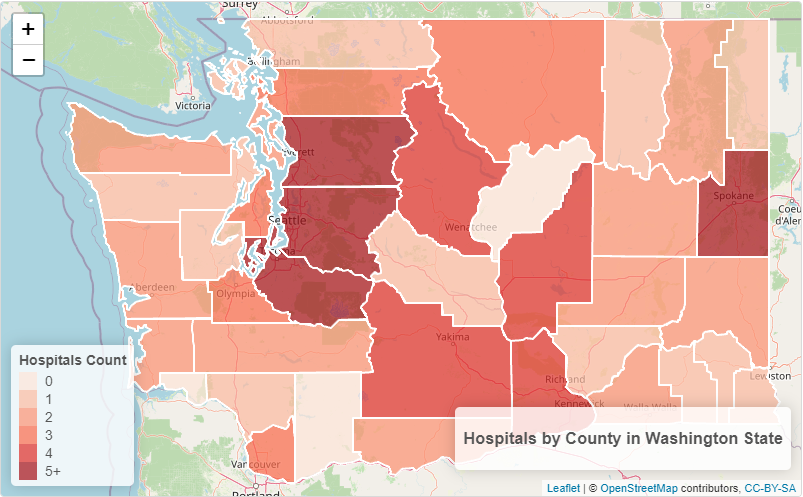

Non-Fatal Drug Overdoses |
This map displays the spatial distribution of healthcare facilities, specifically hospitals, across counties in Washington State. This visual helps with recognizing the link between the proximity of hospitals and drug overdose incidents and provides insights into the accessibility of healthcare resources, focusing on areas that face challenges in providing timely care to those affected by drug overdoses. Each county is color coded based on the number of hospitals available in 2021. Darker shades of red indicate for higher hospital count, meaning these counties have the most hospitals available compared to other areas. The legend ranges from 0 to 5, providing a visual of the number of hospitals across different counties. Taking a closer look at the visual, the areas with the highest concentrations of hospitals are King, Pierce and Snohomish County, suggesting that these areas have better access to healthcare resources. Areas with limited access to healthcare facilities and hospitals may face challenges in providing proper care to those affected by drug overdose.